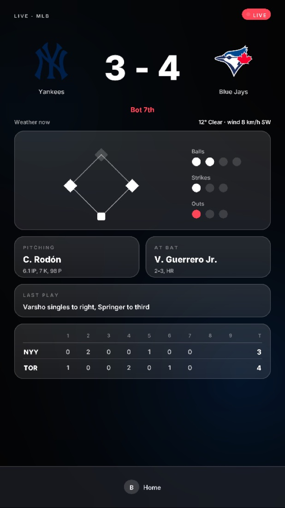
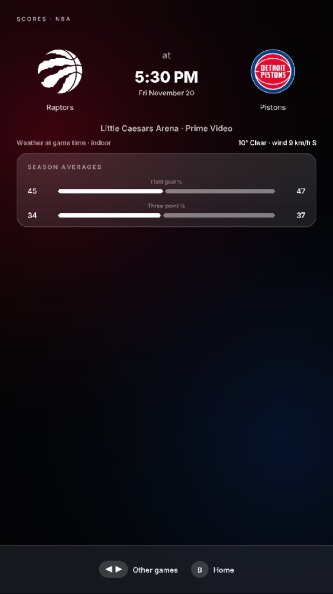
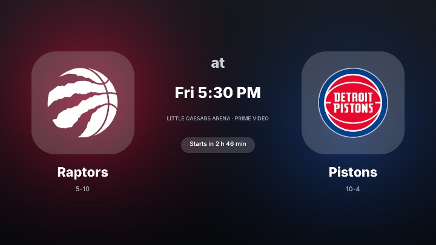
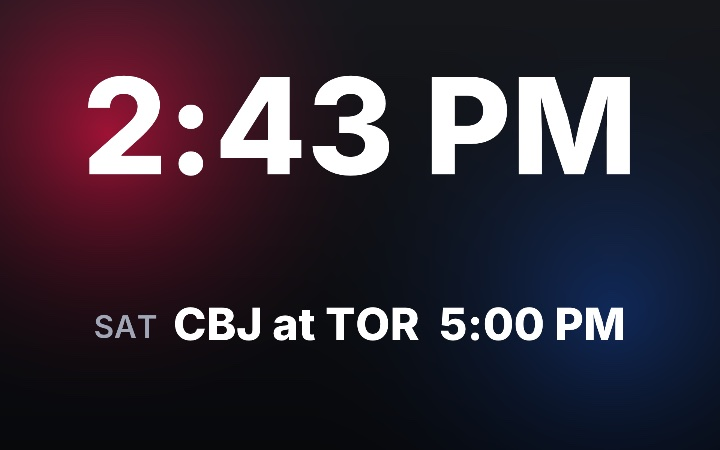
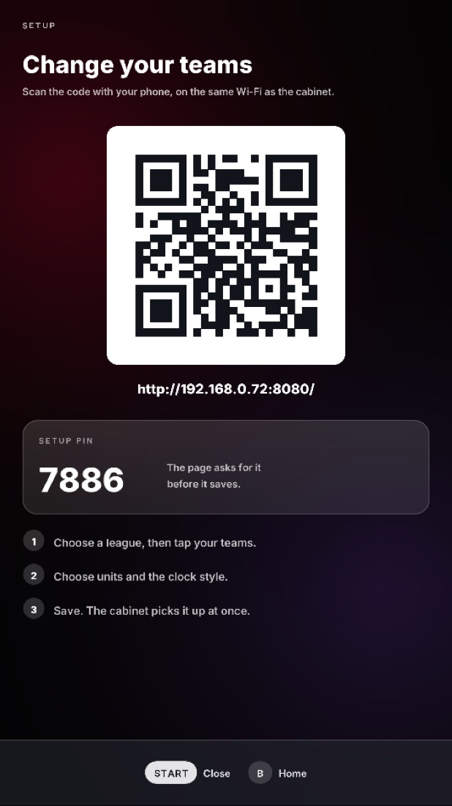
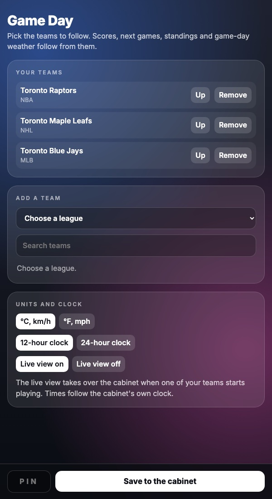

Game Day
Your teams on your AtGames Legends Pinball cabinet. Live scores, next games, standings and the weather where they're playing on the playfield, Team vs. Team on the backglass, and the score on the DMD.
Free · For the 4KP and HDP · NFL, NBA, NHL, MLB, MLS, soccer and college
All three screens, all about your teams
Your teams, at a glance
The time, your next game with a countdown and channel, today's scores and your division standings, on one screen.
The live view
When one of your teams starts playing, the cabinet switches to the game: score, clock, line score, scoring plays and team stats. Baseball adds runners on base, the count, pitcher and batter.
Team vs. Team on the backglass
The two teams' logos face to face over a blend of their colors, with the live score between them, or when and where they play next. Both logos flash when either team scores.
The score on the DMD
The live score in large type with the period, quarter or inning, readable across the room. Between games: the time, with a ticker of finals and what's next.
Weather where they play
The forecast for the city your next game is in, at game time, with the hours around it. Indoor arenas are marked, and the ballpark's wind shows during baseball.
Set up from your phone
Scan the code on the cabinet, pick your teams from any league, and save. No typing on the cabinet, no account, nothing to sign up for.
On the cabinet
Screenshots from the cabinet simulator. Teams, logos and colors follow whoever you pick.




Get started
Copy it to your USB drive
Put the whole game-day folder inside the external folder on the USB drive you use with your cabinet, then plug the drive back in.
Launch and pick your teams
Open Game Day from your cabinet's external applications. The first time, it shows a code to scan with your phone to pick your teams.
Updating
Download the new release and replace game-day.elf (or the whole folder, keeping data). Your teams and settings live in data, so they carry over.
Needs
An AtGames Legends Pinball 4KP or HDP on Wi-Fi with internet, and a phone on the same Wi-Fi for setup.
Pick your teams from your phone
- In Game Day, press Start (it opens by itself the first time). The playfield shows a QR code, the page's address and a 4-digit PIN.
- Scan the code with your phone's camera. Your phone has to be on the same Wi-Fi as the cabinet.
- Choose a league, then tap your teams. Add as many as you like from any league, and put your favorite first: its division is the one on the home screen.
- Pick °C or °F, the 12- or 24-hour clock, and whether the live view takes over when a team starts playing.
- Enter the PIN from the cabinet and tap Save to the cabinet. The cabinet loads your teams right away.
Times follow your cabinet's own clock and time zone, so there's nothing to set.


Flippers and a few buttons
| Flippers (or left / right) | Move between cards on the home screen. On a game page, step through the other games. |
| A | Open the highlighted card: your next game, the first game in Scores, or the full standings. |
| Start | Show the setup code and PIN, or close it. |
| B / Back | Back to the home screen. On the home screen, leave Game Day. |
Game pages and standings go back to the home screen by themselves after a minute. The live view stays up until the game ends or you press Back.
If something isn't right
The QR code doesn't open the setup page
- Check that your phone is on the same Wi-Fi as the cabinet, not on mobile data or a guest network.
- Type the address shown under the code (for example
http://192.168.1.20:8080/) into your phone's browser. Keep thehttp://, not https. - If the cabinet shows more than one address under "Also:", try those.
- If the screen says the setup page isn't available, the cabinet isn't on a network. Connect it to Wi-Fi in the cabinet's settings and open Game Day again.
The team list won't load on my phone
Your phone gets the team lists from the cabinet, and the cabinet gets them from ESPN. If the page says the cabinet couldn't get the list, the cabinet can't reach the internet right now. Check its Wi-Fi, then choose the league again. Once a league has loaded, it's kept for a day.
Saving says the PIN doesn't match
The PIN changes every time Game Day starts. Use the one on the cabinet's screen right now; if you restarted the app, reload the page on your phone and enter the new PIN.
The time is wrong
Game Day uses your cabinet's own clock and time zone. If the clock is off, it's off on the cabinet too: check the cabinet's time settings and that it's online (it sets its clock from the internet). Game times use the same clock, so they're correct whenever the cabinet's is.
Logos show as letters in colored squares
That's the stand-in while a logo downloads. Each logo is downloaded once and kept in game-day/logos, so after the first time they show at once. If a download fails, Game Day tries again a couple of minutes later.
It says "Offline" at the top
The latest refresh didn't reach the internet, so you're seeing the last scores it saved, and the label says how old they are. It clears by itself once the cabinet is back online.
The live view didn't open when my team started
- It opens within about 20 seconds of the game going live, and only once per game. If you pressed Back, open the game again from Scores.
- Check that the live view is on in setup.
- It doesn't open over the setup screen. Close setup with Start.
Something else is wrong. How do I send a log?
Game Day writes a log every time it runs. Take the USB drive out and find external/game-day/logs/output.txt. Open an issue on GitHub with that file, which cabinet you have, and what you saw. A photo of the screen helps.
Questions
About Game Day
Which cabinets does it work on?
AtGames Legends Pinball 4KP and HDP. Game Day uses the playfield, the backglass and the DMD, and it finds the right screen on each model by itself.
Which leagues can I follow?
NFL, NBA, WNBA, NHL, MLB, MLS, the Premier League, LaLiga, the Bundesliga, Serie A, Ligue 1, college football, and men's and women's college basketball.
How many teams can I follow?
Up to 12, from any mix of leagues. The first team in your list decides which standings the home screen shows; you can change the order in setup.
Does it need the internet?
Yes, for scores, schedules and weather. Without it, Game Day shows the last data it saved and says it's offline.
How up to date are the scores?
During a game your teams are in, Game Day refreshes about every 20 seconds; otherwise every couple of minutes. Scores come from ESPN, so they're as quick as ESPN's own scoreboard.
Do I need the Arcade Control Panel?
No. Everything works with the flippers, A, B and Start.
Privacy and files
Do I need an account? What does it collect?
No account, and nothing is collected. Game Day asks ESPN for scores and Open-Meteo for weather, like any website would. Your settings stay on your USB drive.
Where does it keep its files?
Only inside its own folder, external/game-day: data holds your settings, cache the latest scores and weather, and logos the team logos. Nothing is written anywhere else on the cabinet or the drive.
Who can change my settings?
Only someone on your Wi-Fi who can see the PIN on the cabinet's screen. The setup page runs only while Game Day is open, and the PIN changes every time it starts.
Does it change anything on my cabinet?
No. It runs like any external application from the USB drive and doesn't touch the cabinet's firmware or settings. Take the folder off the drive and it's gone.
Can it share a USB drive with my other apps?
Yes. Game Day lives in its own folder under external, next to any other apps on the drive.
Is it affiliated with ESPN, the leagues or AtGames?
No. Game Day is a free, independent app. Team names and logos belong to their teams and leagues.